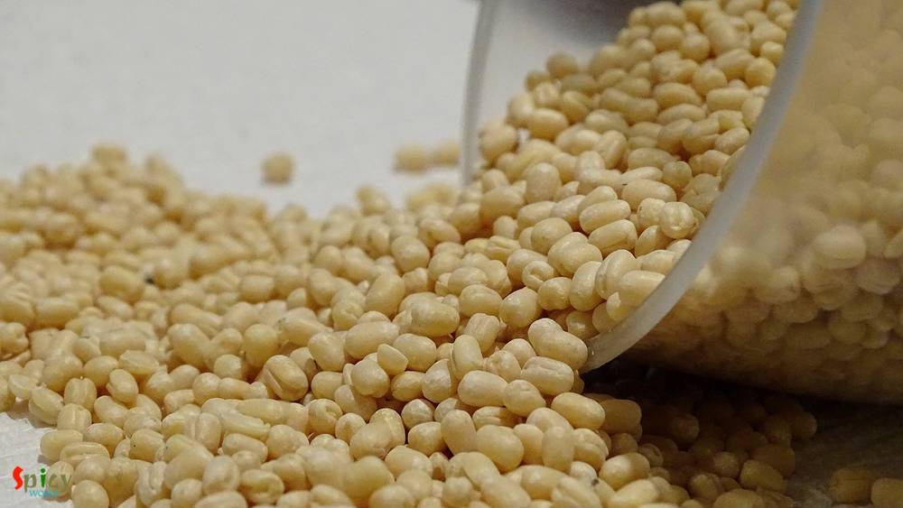
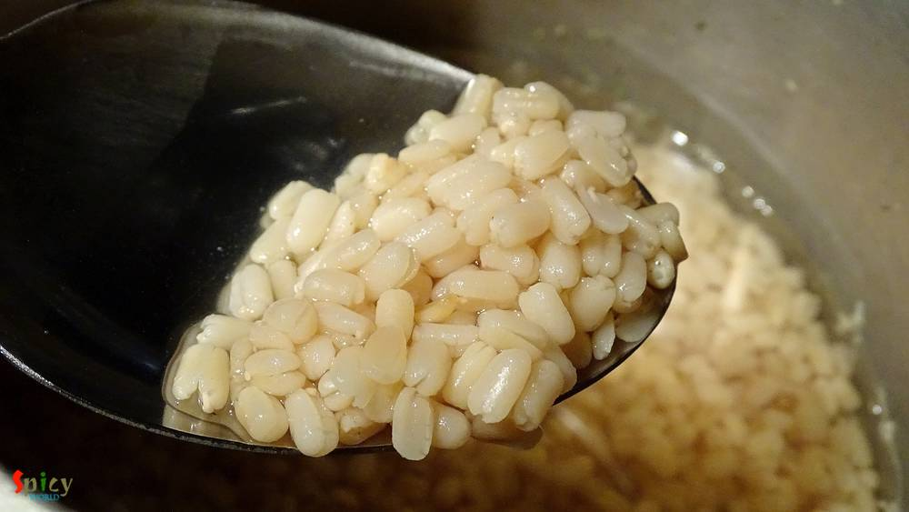

Simple and Easy Recipes
Biulir Daal / Urad daal (Pure bengali style) / Kolaier Daal
© 2016 Spicy World, Published on: Dec 15, 2015
Soul food means the food which you can enjoy from the bottom of your heart while eating. Being a bengali I always face a common question- 'fish and posto(poppy seeds) are your soul food, right?'. And my answer is always 'oh, hell yaa' ... ? Today I will talk about vegetarian food. We always make 'biulir daal' / 'urad daal' with posto. The combo is nothing but heavenly. There is a must ingredient we use in our urad daal is 'hing' / asafoetida. Many bengalis also enjoy this meal with fried eggplant / begunvaja. The recipe is very simple and easy. It is a no onion and no garlic dish. Try this in your kitchen and make your lunch a traditional one.
 / Kolaier Daal")
Ingredients
- half cup of urad daal.
- 1 cup of water.
- 2 pinches of hing / asafoetida.
- 1 Teaspoon crushed fennel seeds / mouri.
- half Teaspoon ginger paste.
- 1 dry red chilli.
- 3 green chilies.
- 1 bay leaf.
- 1 Teaspoon turmeric powder.
- Salt.
- 2 Tablespoons of mustard oil.
 / Kolaier Daal")
Steps
Dry roast the urad daal for 6 minutes in a pan.
Remove the daal from pan and wash thoroughly with water.
Add the washed daal and a cup of water in a pressure cooker. Give it pressure for 15 minutes or until the lentils become soft.
Heat mustard oil in a pan.
Add bay leaf and dry red chilli in hot oil.
Then add crushed fennel seeds, hing and turmeric powder. Mix it for 15 seconds.

Immediately add green chilies and ginger paste. Mix them for 20 seconds.

Then add the boiled daal and salt. Cook it for 5 minutes and mash the daal with your spatula a bit. The consistency will become thick.
Check the seasoning and adjust it according to your taste.
Then turn off the heat.
Your biulir daal is ready ...
Serve this hot with plain rice, posto or fried eggplant.
 / Kolaier Daal (Final)")